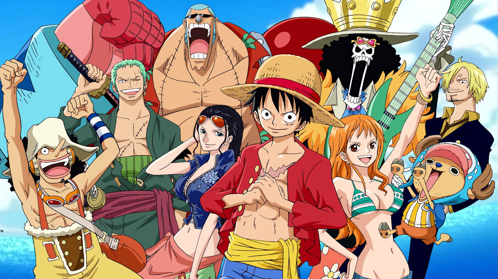
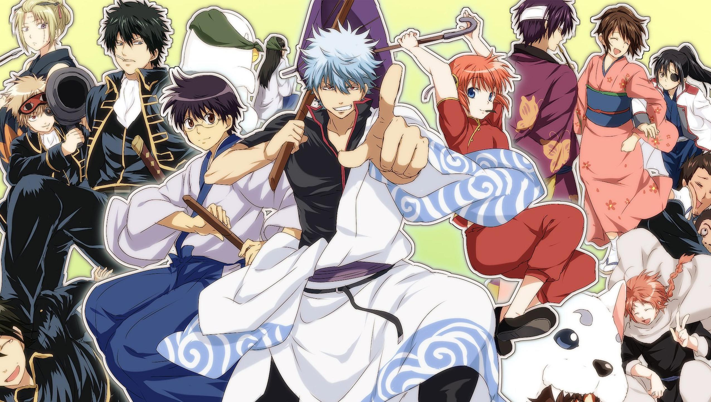

Dragon Ball Classic Series
The original Dragon Ball series, created by Akira Toriyama, follows the adventures of a young boy named Goku as he embarkson a quest for the Dragon Balls, seven magical orbs that, when gathered, can summon a dragon to grant a wish. The series emphasizes themes of friendship, perseverance, and personal growth. Goku's relationships with his friends and mentors play a significant role in his development.

Friendship, Adventure, Growth, Comedy
One Piece
Years ago, the fearsome pirate king Gold Roger disappeared, leaving a huge pile of treasure and the famous “One Piece” behind. Whoever claims the “One Piece” will be named the new pirate king. Luffy D. Monkey, a boy who consumed the “Devil's Fruit”, has it in his head that he'll follow in the footsteps of his idol, the pirate Shanks, and find the One Piece. It helps, of course, that his body has the properties of rubber and he's surrounded by a bevy of skilled fighters and thieves to help him along the way.
Friendship, Adventure, Growth, Comedy
Gintama
Gintama is a Japanese manga and anime series about a samurai named Gintoki Sakata who works as a freelancer in a world invaded by aliens. Gintoki Sakata, an eccentric silver-haired man who always carries around a wooden sword and maintains his stature as a samurai despite the ban. As the founder of Yorozuya, a small business for odd jobs, Gintoki often embarks on endeavors to help other people—though usually in rather strange and unforeseen ways. The story is set in Edo-period Japan, where the aliens, called Amanto, have taken over the government and outlawed swords.
Friendship, Adventure, Growth, Comedy